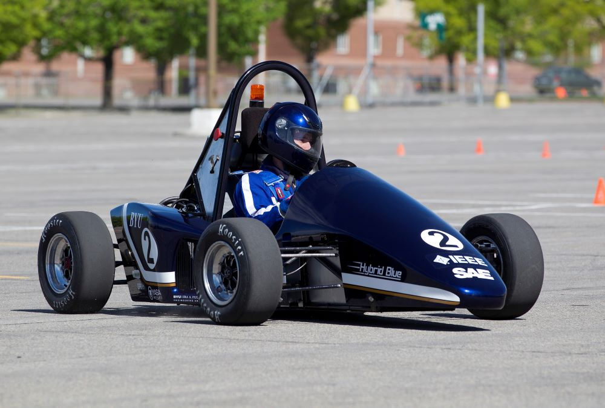
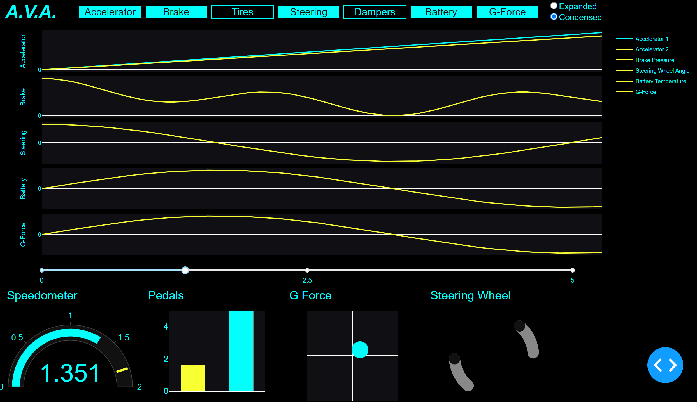
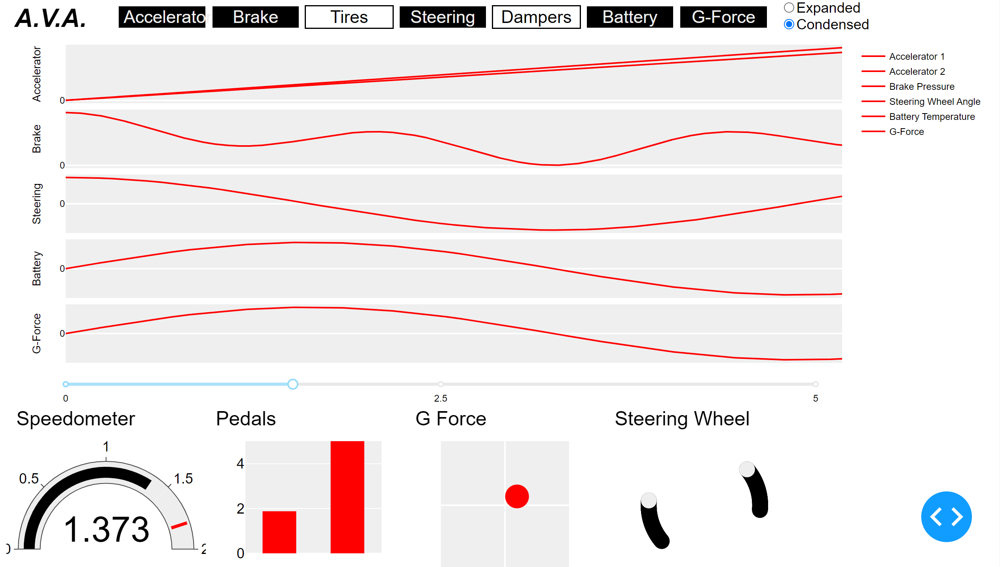
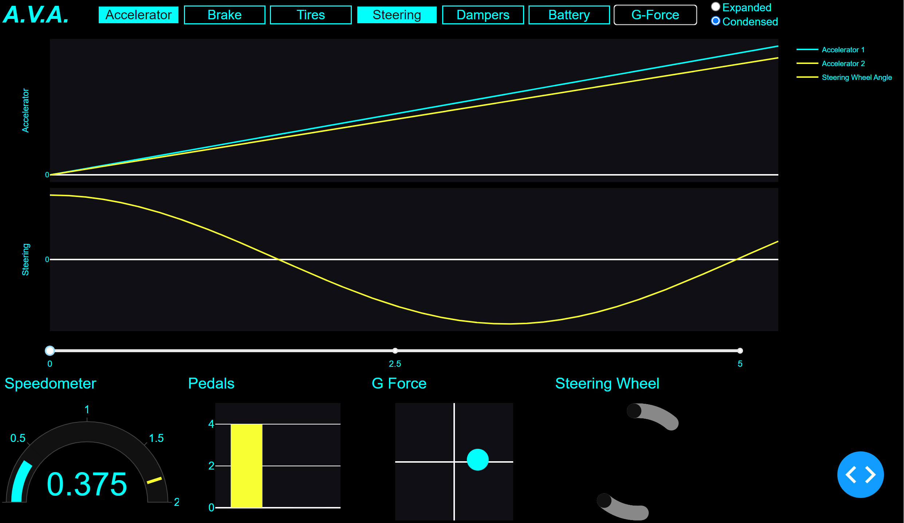
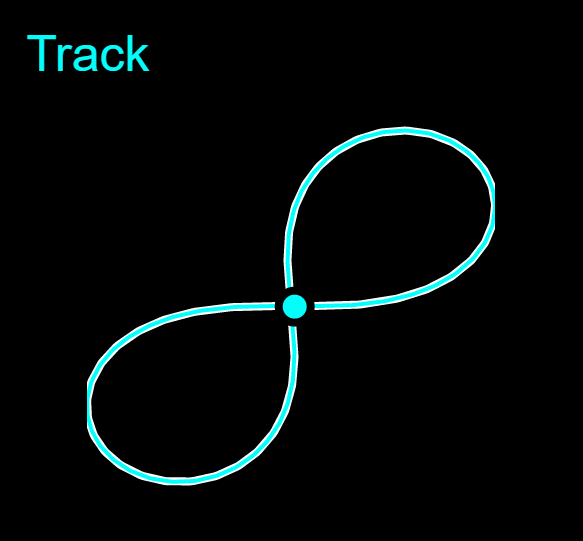
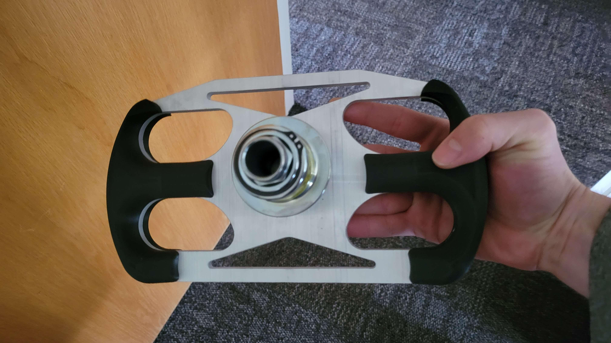
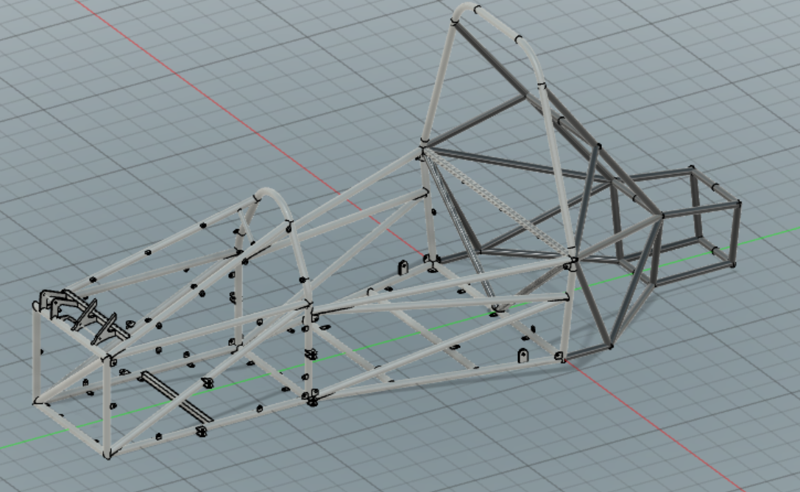

Winning with Data: A Dashboard for Formula E Vehicle Analytics
A clean and interactive custom dashboard for visualizing racing performance data | View Code
"The goal is to turn data into information, and information into insight."
- Carly Fiorina
BYU Formula E Club
In the fall of 2022 I joined a new club at my college called BYU Formula. The club is designed for mechanical (ME) and electrical engineers (EE), but I decided to participate on a whim because I’ve missed working with hardware since I changed my major from EE to applied math. I was part of the Electronics subteam, which is responsible for the sensors and data collection for the vehicle. I spent most of that year researching and learning about the physical sensor array, but my biggest contribution has been the analytics dashboard I developed to visualize and interpret the data the racecar produces.
If you are unfamiliar with the competition, BYU Formula E is an engineering club focused on designing, manufacturing, testing, and competing of an open-wheel, electrically-powered race car. It operates under the Formula program of the Society of Automotive Engineers (SAE). The team aims to fit all of its work to the yearly regulations of FSAE, and perform competitively with the end products of student engineers from around the globe.
The Advanced Vehicle Analytics (AVA) application is a custom dashboard that displays vehicle and driving data collected from an array of sensors after a race for the BYU Formula E club. These sensors record everything from tire speed to steering wheel angle of an electric race car while driving.
In addition to providing advanced analytics and feedback, A.V.A. visualizes driving information in a format that makes it easy to understand and gain insight from the data. The name is inspired by Ava, the highly capable AI machine from Ex Machina, and the acronym captures the contribution this dashboard provides to the BYU Formula E club's engineering challenge of electric car racing.
Plotly and Dash
I built AVA almost exclusively with the Plotly and Dash Python visualization and production packages over the course of several weeks.
Plotly is an open-source, interactive, and browser-based graphing package for Python. It is built on top of Plotly.js, and it supports over 30 chart types, including scientific charts, 3D graphs, statistical charts, SVG maps, financial charts, and more. Plotly graphs can be viewed in Jupyter notebooks, standalone HTML files, or integrated into Dash applications like AVA is.

Dash is a web application framework for Python that makes it easy to build analytical web applications. It is built on top of Flask, React, and Plotly.js, and it allows you to create interactive web applications with just a few lines of code. Dash is a popular choice for data scientists and machine learning engineers who want to build web applications to share their work.
Capabilities
AVA can provide drivers with a wealth of information about their vehicle's performance, driving behavior, and overall safety. With the ability to display all sensor data simultaneously, drivers and engineers can easily compare and infer important trends and patterns with just a quick glance. They can also focus on specific sensors to gain a deeper understanding of particular aspects of their driving experience, while still being able to hide other sensors for a streamlined view.
In addition to these features, AVA can condense all of this information onto a single screen, making it easy to navigate and understand, or increase the size of the display so individual charts are easier to read. The ability to switch between different display modes, such as “Dark”, “Daylight”, and “Jarvis” helps to enhance the user experience and ensure that the dashboard is always visible and easy to read, no matter the conditions.
Most importantly, AVA displays instantaneous data through various graphs and charts, such as a speedometer plot that shows instantaneous speed, a bar chart that displays the depression of the brake and accelerator pedals, and a scatter plot that shows the g-forces from the accelerometer. A line chart also shows the path the car followed during its last run, and where it is on the path at any point in time, while a scatter plot reconstructs the steering wheel to show how much the wheel is turned.
AVA provides an extensive set of tools and insights to help the BYU Racing team better understand their driving data, optimize their vehicle's performance, and ensure their safety on the race track. By providing a comprehensive view of all sensor data and the ability to focus on specific aspects of the driving experience, AVA allows each team member to make more informed decisions and ultimately develop a better, safer vehicle. In order to provide this type of user experience and display all the data available, I had to overcome a few technical hurdles first.
Binary to Decimal Conversion
Every sensor on our electric race car sends data in an analog or binary format. When we load the SD with all the data from a race onto our computer, AVA has to convert the binary data into a decimal format before it can be displayed. I created a function that can quickly and easily convert the data into a more human-readable format that is easier to analyze and work with.
The function first checks the type of the input data. If it is a string, it uses the BitArray library to convert the binary data into a floating-point number. If the input data is a data frame, it creates a new dataframe using a list comprehension to iterate over each row of the original dataframe and convert the binary data in each row into a floating-point number using the same method described above.
def convertBinaryData(data):
"""
Convert binary data into a float
Parameters:
data (string or dataframe of strings): data in binary as a string
Returns:
data (int or dataframe of ints): data in decimal
"""
# case if parameter is a string
if type(data) is str:
return BitArray(bin=str(data)).float
# case if parameter is a dataframe
return pd.DataFrame([BitArray(bin=str(d)).float for d in data])
Sensor Compensation
We’re building our car on a budget, so instead of the highly efficient and robust sensors most people have in their consumer vehicles, we have to settle for the cheap sensors that have flaws we then must compensate for. For example, they don’t all start at exactly zero, and instead have a little bit of bias with arbitrary maximums and minimums.
The convertData function is an important tool for processing the sensor data and converting it into a more useful format. This function takes in both a string or a dataframe of strings as input, as well as the ID of the sensor that the data corresponds to. The function then applies a series of calculations and modifications to the data in order to convert it into a floating-point number that reflects the original measurement.
The first step of the function involves retrieving the data modifiers for the sensor in question. These modifiers include the weight, bias, maximum value, minimum value, and slope of the sensor data that adjust and modify the raw data in order to produce a more accurate and useful floating-point number. For each data point, the function subtracts the minimum value, multiplies the result by the slope, and then adds the bias to produce the final floating-point value. This calculation effectively scales and normalizes the data, ensuring that it is in a format that is more easily interpretable and accurate.
def convertData(data, sensor_id):
"""
Read in sensor data and convert to a float
Parameters:
data (string or dataframe of strings): data in decimal as a string
sensor_id (int): the id of the sensor
Returns:
data (float or dataframe of floats): data in decimal
"""
# get the data modifiers for the sensor
weight = weights["W_" + sensor_names[sensor_id]]
bias = biases["B_" + sensor_names[sensor_id]]
maxi = maximums["X_" + sensor_names[sensor_id]]
mini = minimums["N_" + sensor_names[sensor_id]]
slope = weight / (maxi - mini)
# case if parameter is a string
if type(data) is str:
return (float(data) - mini) * slope + bias
# case if parameter is a dataframe
return pd.DataFrame((np.array([float(d) for d in data]) - mini) * slope + bias)
Reverse Engineering Speed and Direction
When our team is analyzing their racing data to determine the most important improvements to make on the vehicle and in the drivers’ technique, they need to know where on the track the vehicle is at any given point of interest. Knowing exactly when the car is making a tight corner or accelerating down a straightaway eliminates a lot of guesswork and makes the rest of the data much more interpretable. Without a GPS tracker accurate to a few inches or an expensive radar set up, we don’t have a way to record position accurately. However, we are able to measure vehicle speed and steering wheel angle fairly easily.
The convert_position function is a clever method for converting time stamped speed and steering wheel angle data into current track positions. This function takes in three parameters: a list of speeds in miles per hour, a list of timestamps in seconds, and a list of wheel angles in degrees. It then applies a series of calculations and modifications to these input values in order to generate two output lists: one containing the current x position of the car on the track, and another containing the current y position.
The function first converts the input speeds from miles per hour to meters per second. The function then multiplies each speed value by the corresponding time value in order to calculate the distance traveled during each time interval.
Using the distance values and the wheel angle data, the function then iterates through each time interval to calculate the car's position on the track at that moment. At each step, the function updates the car's angle based on the wheel angle data, then uses this angle and the distance traveled during the interval to calculate the car's new x and y positions on the track. The resulting x and y coordinates are stored in separate lists, which are returned as the final output of the function.
def convert_position(speed, time, angle):
"""
Convert timestamped speed and steering wheel angle to current
track position.
:param speed: (list) a list of speeds in miles per hour as floats
:param time: (list) as list of timestamps in seconds as floats
:param angle: (list) a list of wheel angles in degrees as floats
:return: x and y positions (list, list) of floats
"""
# convert MPH to MPS and make distance traveled per second
distance = [s * MPS * t for s, t in zip(speed, time)]
theta = 0
x = 0
y = 0
x_val = [0] * len(distance)
y_val = [0] * len(distance)
angle = [np.deg2rad(a) for a in angle]
for i in range(len(distance)):
theta += angle[i]
x += distance[i] * np.cos(theta)
x_val[i] = x
y += distance[i] * np.sin(theta)
y_val[i] = y
return x_val, y_val
Creating a Steering Wheel with a Scatter Plot
I wanted to display the steering wheel information in an interesting and meaningful way. Instead of displaying the number of degrees the wheel has been turned, or trying to awkwardly rotate a steering wheel JPEG, I developed a plot that could display an actual steering wheel and its position at any given time.
I wrote a function that generates a scatter plot to display the instantaneous position of a steering wheel. The plot is customizable with parameters for the angle at which the wheel is turned, and shows the steering wheel as a set of points that are calculated using trigonometry. The function iteratively rotates the points by the input angle, which allows for the steering wheel to display at different angles.
def steering(angle=0, theme="Dark", size="medium"):
"""
Create a scatter plot to show instantaneous steering wheel position
Parameters:
:param size: (string) select display size such as 'small', 'medium', or 'large'
:param angle: (int) angle in radians that the steering wheel is turned
:param theme: (string) select display theme such as 'Dark' or 'Jarvis'
Returns:
:return: fig: (plotly figure) steering wheel view
"""
# set handlebar location
density = 100
t_right = np.linspace(-np.pi / 8, np.pi / 8, density)
x = np.cos(t_right)
y = np.sin(t_right)
t_left = np.linspace(np.pi - np.pi / 8, np.pi + np.pi / 8, density)
x1 = np.cos(t_left)
y1 = np.sin(t_left)
# Rotate the points by the input angle
# theta = angle * np.pi / 180.0
theta = angle
c, s = np.cos(theta), np.sin(theta)
# compute x and y positions of points that construct the steering wheel
x_right = x * c - y * s
y_right = x * s + y * c
x_left = x1 * c - y1 * s
y_left = x1 * s + y1 * c
Upcoming Developments
Developing an analytics dashboard for the BYU racing team was an exciting and rewarding experience that allowed me to apply my college skills to a real-world challenge. Collaborating with the team and leveraging our unique strengths, I was able to create a user-friendly dashboard that offered valuable insights. Although it was my first time developing a dashboard, I relished the opportunity to learn about UX design and GUIs. I’ve also appreciated working with engineers on physical problems. It is a nice change of pace from many of the assignments I work on for class, and it has been a good experience learning how to work alongside people with different backgrounds, skills, and experience towards a common goal.
The project is far from over, and I eagerly await more user feedback to further enhance the dashboard. I discovered that Plotly and Dash run slowly, so I need to explore other software options to improve the dashboard’s speed. Despite these setbacks, the experience has been an enriching journey, and I look forward to refining the dashboard and delivering even better results.